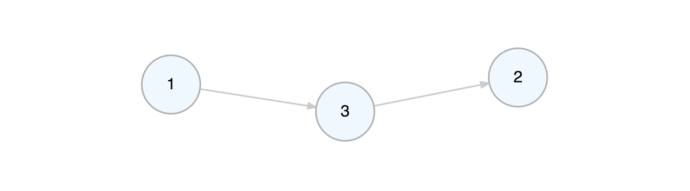
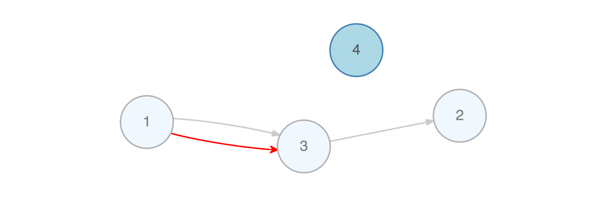
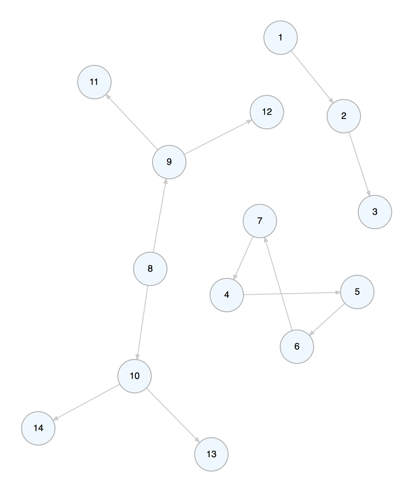

With the DiagrammeR package you can create, modify, analyze, and visualize network graph diagrams. The output can be incorporated into R Markdown documents, integrated with Shiny web apps, converted to other graph formats, or exported as image files.

The graph above can be created with this combination of DiagrammeR functions:
example_graph <-
create_graph() %>%
add_pa_graph(
n = 50, m = 1,
set_seed = 23
) %>%
add_gnp_graph(
n = 50, p = 1/100,
set_seed = 23
) %>%
join_node_attrs(df = get_betweenness(.)) %>%
join_node_attrs(df = get_degree_total(.)) %>%
colorize_node_attrs(
node_attr_from = total_degree,
node_attr_to = fillcolor,
palette = "Greens",
alpha = 90
) %>%
rescale_node_attrs(
node_attr_from = betweenness,
to_lower_bound = 0.5,
to_upper_bound = 1.0,
node_attr_to = height
) %>%
select_nodes_by_id(nodes = get_articulation_points(.)) %>%
set_node_attrs_ws(node_attr = peripheries, value = 2) %>%
set_node_attrs_ws(node_attr = penwidth, value = 3) %>%
clear_selection() %>%
set_node_attr_to_display(attr = NULL)
render_graph(example_graph, layout = "nicely")DiagrammeR’s graph functions allow you to create graph objects, modify those graphs, get information from the graphs, create a series of graphs, and do many other useful things. This makes it possible to generate a network graph with data available in tabular datasets. Two specialized data frames contain node data and attributes (node data frames) and edges with associated edge attributes (edge data frames). Because the attributes are always kept alongside the node and edge definitions (within the graph object itself), we can easily work with them.
Graph Basics
Let’s create a graph object with create_graph() and add some nodes and edges to it. Each node gets a new integer ID upon creation. Each edge also gets an ID starting from 1. The pipes between functions make the whole process readable and understandable.

We can take away an edge by using delete_edge().
b_graph <- a_graph %>% delete_edge(from = 1, to = 2)
We can add a node to the graph while, at the same time, defining edges to or from existing nodes in the graph.

Viewing the graph object in the console will provide some basic information about the graph and some pointers on where to get additional information.
c_graph
#> DiagrammeR Graph // 3 nodes / 2 edges
#> -- directed / connected / DAG / simple
#>
#> NODES / type: <unused> / label: <unused> info: `get_node_df()`
#> -- no additional node attributes
#> EDGES / rel: <unused> info: `get_edge_df()`
#> -- no additional edge attributes
#> SELECTION / <none>
#> CACHE / <none>
#> GLOBAL ATTRS / 17 are set info: `get_global_graph_attr_info()`
#> GRAPH ACTIONS / <none>
#> GRAPH LOG / <3 actions> -> add_edge() -> delete_edge() -> add_node()Any time we add a node or edge to the graph, we can add node or edge aesthetic or data attributes. These can be styling properties (e.g., color, shape), grouping labels (e.g., type and rel), or data values that are useful for calculations and for display purposes. Most node or edge creation functions (depending on whether they create either edges, nodes, or both) have the arguments node_aes, edge_aes, node_data, and edge_data. Using these, we can call the namesake helper functions (node_aes(), edge_aes(), node_data(), and edge_data()) to specifically target the created nodes or edges and bind attribute data. An additional benefit in using the helper functions (for the node/edge aesthetic attributes especially) is that RStudio can provide inline help on attribute names and definitions when typing node_aes( or edge_aes( and pressing the TAB key.
Here is an example of adding a node while setting its color, fillcolor, and fontcolor node aesthetic attributes, and, adding an edge with color, arrowhead, and tooltip edge aesthetic attributes. In both the add_node() and the add_edge() calls, the new node and edge were set with a value node/edge data attribute.
d_graph <-
c_graph %>%
add_node(
type = "type_a",
node_aes = node_aes(
color = "steelblue",
fillcolor = "lightblue",
fontcolor = "gray35"
),
node_data = node_data(
value = 2.5
)
) %>%
add_edge(
from = 1, to = 3,
rel = "interacted_with",
edge_aes = edge_aes(
color = "red",
arrowhead = "vee",
tooltip = "Red Arrow"
),
edge_data = edge_data(
value = 5.2
)
)
Creating attributes and setting their values is often useful because we can further work with the attributes (e.g., mutate values or even use them during traversals). Furthermore, we can create aesthetic properties based on numerical or categorical data. This is important for when you want to display your graph diagram using the render_graph() function.
Don’t worry if attribute values weren’t set right during the creation of the associated nodes or edges. They are ways to set attribute values for existing nodes and edges. Functions are available for targeting the specific nodes/edges (i.e., making a selection) and other functions are used to set attribute values for the selected nodes or edges. Often, this can be the more efficient strategy as we can target nodes/edges based on their properties (e.g., degree, relationships to neighbors, etc.). Here is an example where we select a node based on its value attribute and modify its color node aesthetic attribute:
e_graph <-
d_graph %>%
select_nodes(conditions = value == 2.5) %>%
set_node_attrs_ws(node_attr = fillcolor, value = "orange") %>%
clear_selection()To explain this a bit, we take the graph object d_graph, select only the nodes that have a node value attribute of exactly 2.5. (We now have an active node selection.) With the selected nodes, we set their node attribute fillcolor with the value orange. Then we deactivate the selection with clear_selection(). Now, if we view the graph with render_graph() we get this:

There are quite a few functions that allow you to select nodes (e.g., select_nodes(), select_nodes_by_id(), select_last_nodes_created()) and edges (e.g., select_edges(), select_edges_by_edge_id(), select_last_edges_created()). With these selections, we can apply changes using functions that end with ..._ws() (with selection). As seen, node attributes could be set/replaced with set_node_attrs_ws() but we can also mutate attributes of selected nodes (mutate_node_attrs_ws()), delete selected nodes (delete_nodes_ws()), and even create a subgraph with that selection (create_subgraph_ws()). Selections of nodes or edges can be inverted (where non-selected nodes or edges become the active selection) with invert_selection(), certain nodes/edges can be removed from the active selection with the deselect_nodes()/deselect_edges(), and any selection can and should be eventually cleared with clear_selection().
We can create a graph object and add graph primitives such as paths, cycles, and trees to it.
f_graph <-
create_graph() %>%
add_path(n = 3) %>%
add_cycle(n = 4) %>%
add_balanced_tree(k = 2, h = 2)
You can add one or more randomly generated graphs to a graph object. Here, let’s add a directed GNM graph with 10 nodes and 15 edges (the set_seed option makes the random graph reproducible).
g_graph <-
create_graph() %>%
add_gnm_graph(
n = 15, m = 20,
set_seed = 23
)
The undirected version of this graph is can be made using:
h_graph <-
create_graph(directed = FALSE) %>%
add_gnm_graph(
n = 15, m = 20,
set_seed = 23
)
We can view the graph using render_graph(). There are several layouts to choose from as well (e.g., nicely, tree, kk, fr, etc.).
render_graph(h_graph, layout = "fr")
Using Data from Tables to Generate a Graph
The DiagrammeR package contains a few simple datasets that help illustrate how to create a graph with table data. The node_list_1 and edge_list_1 datasets are super simple node and edge data frames that can be assembled into a graph. Let’s print them side by side to see what we’re working with.
node_list_1 edge_list_1
id label from to
1 1 A 1 1 2
2 2 B 2 1 3
3 3 C 3 1 4
4 4 D 4 1 9
5 5 E 5 2 8
6 6 F 6 2 7
7 7 G 7 2 1
8 8 H 8 2 10
9 9 I 9 3 1
10 10 J 10 3 6
11 3 8
12 4 1
13 5 7
14 6 2
15 6 9
16 8 1
17 9 3
18 9 10
19 10 1To fashion this into a graph, we need to ensure that both the nodes and their attributes (in this case, just a label) are added, and, that the edges are added. Furthermore, we must map the from and the to definitions to the node id (in other cases, we may need to map relationships between text labels to the same text attribute stored in the node data frame). We can use three functions to generate a graph containing this data:
Let’s show the process in a stepwise fashion (while occasionally viewing the graph’s internal ndf and edf) so that we can understand what is actually happening. First, create the graph object with create_graph():
# Create the graph object
i_graph_1 <- create_graph()
# It will start off as empty
i_graph_1 %>% is_graph_empty()
#> [1] TRUEAdd nodes from a table with add_nodes_from_table():
# Add the nodes to the graph
i_graph_2 <-
i_graph_1 %>%
add_nodes_from_table(
table = node_list_1,
label_col = label
)Inspect the graph’s internal node data frame (ndf) with get_node_df():
# View the graph's internal node data frame
i_graph_2 %>% get_node_df()
#> id type label id_external
#> 1 1 <NA> A 1
#> 2 2 <NA> B 2
#> 3 3 <NA> C 3
#> 4 4 <NA> D 4
#> 5 5 <NA> E 5
#> 6 6 <NA> F 6
#> 7 7 <NA> G 7
#> 8 8 <NA> H 8
#> 9 9 <NA> I 9
#> 10 10 <NA> J 10The graph now has 10 nodes (no edges yet). Each node was automatically assigned an auto-incrementing id. The incoming id was also automatically renamed id_external so as to avoid duplicate column names and also to retain a column for mapping edge definitions. Now, let’s add the edges. We need to specify that the from_col in the edge_list_1 table is indeed from and that the to_col is to. The from_to_map argument expects a node attribute column that the from and to columns will map to. In this case it’s id_external. Note that while id also matches perfectly in this mapping, there may be cases where id won’t match with and id_external column (e.g., when there are existing nodes or when the node id values in the incoming table are provided in a different order, etc.).
Now, connect the graph nodes with edges from another dataset using add_edges_from_table():
# Add the edges to the graph
i_graph_3 <-
i_graph_2 %>%
add_edges_from_table(
table = edge_list_1,
from_col = from,
to_col = to,
from_to_map = id_external
)Inspect the graph’s internal edge data frame (edf) with get_edge_df():
# View the edge data frame
i_graph_3 %>% get_edge_df()
#> id from to rel
#> 1 1 1 2 <NA>
#> 2 2 1 3 <NA>
#> 3 3 1 4 <NA>
#> 4 4 1 9 <NA>
#> 5 5 2 8 <NA>
#> 6 6 2 7 <NA>
#> 7 7 2 1 <NA>
#> 8 8 2 10 <NA>
#> 9 9 3 1 <NA>
#> 10 10 3 6 <NA>
#> 11 11 3 8 <NA>
#> 12 12 4 1 <NA>
#> 13 13 5 7 <NA>
#> 14 14 6 2 <NA>
#> 15 15 6 9 <NA>
#> 16 16 8 1 <NA>
#> 17 17 9 3 <NA>
#> 18 18 9 10 <NA>
#> 19 19 10 1 <NA>By supplying the name of the graph object in the console, we can get a succinct summary of the graph’s properties. Here, we see that the graph has 10 nodes and 19 edges:
i_graph_3
#> DiagrammeR Graph // 10 nodes / 19 edges
#> -- directed / connected / simple
#>
#> NODES / type: <unused> / label: 10 vals - complete & unique
#> -- 1 additional node attribute (id_external)
#> EDGES / rel: <unused> info: `get_edge_df()`
#> -- no additional edge attributes
#> SELECTION / <none>
#> CACHE / <none>
#> GLOBAL ATTRS / 17 are set info: `get_global_graph_attr_info()`
#> GRAPH ACTIONS / <none>
#> GRAPH LOG / <1 action> -> add_nodes_from_table() -> add_edges_from_table() -> ()There are two other similar datasets included in the package (node_list_2 and edge_list_2). These contain extended attribute data. Let’s have a quick look at their column names:
colnames(node_list_2)
#> [1] "id" "label" "type" "value_1" "value_2"
colnames(edge_list_2)
#> [1] "from" "to" "rel" "value_1" "value_2"Because we have unique labels in the label column, and categorical labels in the type and rel columns, we can create a property graph from this data. Like before, we can incorporate the two tables as a graph with add_nodes_from_table() and add_edges_from_table(). This time, we’ll remove the auto-generated id_external node attribute with the drop_node_attrs() function.
j_graph <-
create_graph() %>%
add_nodes_from_table(
table = node_list_2,
label_col = label,
type_col = type
) %>%
add_edges_from_table(
table = edge_list_2,
from_col = from,
to_col = to,
from_to_map = id_external,
rel_col = rel
) %>%
drop_node_attrs(node_attr = id_external)Let’s again view the graph summary in the console. Note that the additional node attributes (value_1 and value_2) are present for both the nodes and the edges:
j_graph
#> DiagrammeR Graph // 10 nodes / 19 edges
#> -- directed / connected / property graph / simple
#>
#> NODES / type: 2 vals - complete / label: 10 vals - complete & unique
#> -- 2 additional node attributes (value_1, value_2)
#> EDGES / rel: 3 vals - complete info: `get_edge_df()`
#> -- 2 additional edge attributes (value_1, value_2)
#> SELECTION / <none>
#> CACHE / <none>
#> GLOBAL ATTRS / 17 are set info: `get_global_graph_attr_info()`
#> GRAPH ACTIONS / <none>
#> GRAPH LOG / <3 actions> -> add_edges_from_table() -> () -> drop_node_attrs()Now, because we have node/edge metadata (categorical labels and numerical data in value_1 & value_2 for both nodes and edges), we can do some interesting things with the graph. First, let’s do some mutation with mutate_node_attrs() and mutate_edge_attrs() and get the sums of value_1 and value_2 as value_3 (for both the nodes and the edges). Then, let’s color the nodes and edges forestgreen if value_3 is greater than 10 (red otherwise). Finally, let’s display the values of value_3 for the nodes when rendering the graph diagram. Here we go!
k_graph <-
j_graph %>%
mutate_node_attrs(value_3 = value_1 + value_2) %>%
mutate_edge_attrs(value_3 = value_1 + value_2) %>%
select_nodes(conditions = value_3 > 10) %>%
set_node_attrs_ws(node_attr = fillcolor, value = "forestgreen") %>%
invert_selection() %>%
set_node_attrs_ws(node_attr = fillcolor, value = "red") %>%
select_edges(conditions = value_3 > 10) %>%
set_edge_attrs_ws(edge_attr = color, value = "forestgreen") %>%
invert_selection() %>%
set_edge_attrs_ws(edge_attr = color, value = "red") %>%
clear_selection() %>%
set_node_attr_to_display(attr = value_3)
render_graph(k_graph)
A Network Graph Example
Let’s create a property graph that pertains to contributors to three software projects. This graph has nodes representing people and projects. The attributes name, age, join_date, email, follower_count, following_count, and starred_count are specific to the person nodes while the project, start_date, stars, and language attributes apply to the project nodes. The edges represent the relationships between the people and the project.
The example graph file repository.dgr is available in the extdata/example_graphs_dgr/ directory in the DiagrammeR package (currently, only for the Github version). We can load it into memory by using the open_graph() function, where system.file() helps to provide the location of the file within the package.
# Load in a the small repository graph
graph <-
open_graph(
system.file(
"extdata/example_graphs_dgr/repository.dgr",
package = "DiagrammeR"
)
)We can always view this property graph with the render_graph() function:
render_graph(graph, layout = "kk")
Now that the graph is set up, you can create queries with magrittr pipelines to get specific answers from the graph.
Get the average age of all the contributors. Select all nodes of type person (not project). Each node of that type has non-NA age attribute, so, get that attribute as a vector with get_node_attrs_ws() and then calculate the mean with R’s mean() function.
graph %>%
select_nodes(conditions = type == "person") %>%
get_node_attrs_ws(node_attr = age) %>%
mean()
#> [1] 33.6We can get the total number of commits to all projects. We know that all edges contain the numerical commits attribute, so, select all edges (select_edges() by itself selects all edges in the graph). After that, get a numeric vector of commits values and then get its sum() (all commits to all projects).
graph %>%
select_edges() %>%
get_edge_attrs_ws(edge_attr = commits) %>%
sum()
#> [1] 5182Single out the one known as Josh and get his total number of commits as a maintainer and as a contributor. Start by selecting the Josh node with select_nodes(conditions = name == "Josh"). In this graph, we know that all people have an edge to a project and that edge can be of the relationship (rel) type of contributor or maintainer. We can migrate our selection from nodes to outbound edges with trav_out_edges() (and we won’t provide a condition, just all the outgoing edges from Josh will be selected). Now we have a selection of 2 edges. Get that vector of commits values with get_edge_attrs_ws() and then calculate the sum(). This is the total number of commits.
graph %>%
select_nodes(conditions = name == "Josh") %>%
trav_out_edge() %>%
get_edge_attrs_ws(edge_attr = commits) %>%
sum()
#> [1] 227Get the total number of commits from Louisa, just from the maintainer role though. In this case we’ll supply a condition in trav_out_edge(). This acts as a filter for the traversal and this means that the selection will be applied to only those edges where the condition is met. Although there is only a single value, we’ll still use sum() after get_edge_attrs_ws() (a good practice because we may not know the vector length, especially in big graphs).
graph %>%
select_nodes(conditions = name == "Louisa") %>%
trav_out_edge(conditions = rel == "maintainer") %>%
get_edge_attrs_ws(edge_attr = commits) %>%
sum()
#> [1] 236How do we do something more complex, like, get the names of people in graph above age 32? First, select all person nodes with select_nodes(conditions = type == "person"). Then, follow up with another select_nodes() call specifying age > 32. Importantly, have set_op = "intersect" (giving us the intersection of both selections).
Now that we have the starting selection of nodes we want, we need to get all values of these nodes’ name attribute as a character vector. We do this with the get_node_attrs_ws() function. After getting that vector, sort the names alphabetically with the R function sort(). Because we get a named vector, we can use unname() to not show us the names of each vector component.
graph %>%
select_nodes(conditions = type == "person") %>%
select_nodes(conditions = age > 32, set_op = "intersect") %>%
get_node_attrs_ws(node_attr = name) %>%
sort() %>%
unname()
#> [1] "Jack" "Jon" "Kim" "Roger" "Sheryl"That supercalc project is progressing quite nicely. Let’s get the total number of commits from all people to that most interesting project. Start by selecting that project’s node and work backwards. Traverse to the edges leading to it with trav_in_edge(). Those edges are from committers and they all contain the commits attribute with numerical values. Get a vector of commits and then get the sum (there are 1676 commits).
graph %>%
select_nodes(conditions = project == "supercalc") %>%
trav_in_edge() %>%
get_edge_attrs_ws(edge_attr = commits) %>%
sum()
#> [1] 1676Kim is now a contributor to the stringbuildeR project and has made 15 new commits to that project. We can modify the graph to reflect this.
First, add an edge with add_edge(). Note that add_edge() usually relies on node IDs in from and to when creating the new edge. This is almost always inconvenient so we can instead use node labels (we know they are unique in this graph) to compose the edge, setting use_labels = TRUE.
The rel value in add_edge() was set to contributor – in a property graph we always have values set for all node type and edge rel attributes. We will set another attribute for this edge (commits) by first selecting the edge (it was the last edge made, so we can use select_last_edges_created()), then, use set_edge_attrs_ws() and provide the attribute/value pair. Finally, clear the active selections with clear_selection(). The graph is now changed, have a look.
graph <-
graph %>%
add_edge(
from = "Kim",
to = "stringbuildeR",
rel = "contributor"
) %>%
select_last_edges_created() %>%
set_edge_attrs_ws(edge_attr = commits, value = 15) %>%
clear_selection()
render_graph(graph, layout = "kk")
Get all email addresses for contributors (but not maintainers) of the randomizer and supercalc88 projects. With trav_in_edge() we just want the contributer edges/commits. Once on those edges, hop back unconditionally to the people from which the edges originate with trav_out_node(). Get the email values from those selected individuals as a sorted character vector.
graph %>%
select_nodes(
conditions =
project == "randomizer" |
project == "supercalc"
) %>%
trav_in_edge(conditions = rel == "contributor") %>%
trav_out_node() %>%
get_node_attrs_ws(node_attr = email) %>%
sort() %>%
unname()
#> [1] "j_2000@ultramail.io" "josh_ch@megamail.kn"
#> [3] "kim_3251323@ohhh.ai" "lhe99@mailing-fun.com"
#> [5] "roger_that@whalemail.net" "the_simone@a-q-w-o.net"
#> [7] "the_will@graphymail.com"Which people have committed to more than one project? This is a matter of node degree. We know that people have edges outward and projects and edges inward. Thus, anybody having an outdegree (number of edges outward) greater than 1 has committed to more than one project. Globally, select nodes with that condition using select_nodes_by_degree("outdeg > 1"). Once getting the name attribute values from that node selection, we can provide a sorted character vector of names.
graph %>%
select_nodes_by_degree(expressions = "outdeg > 1") %>%
get_node_attrs_ws(node_attr = name) %>%
sort() %>%
unname()
#> [1] "Josh" "Kim" "Louisa"Installation
DiagrammeR is used in an R environment. If you don’t have an R installation, it can be obtained from the Comprehensive R Archive Network (CRAN).
You can install the development version of DiagrammeR from GitHub using the devtools package.
devtools::install_github("rich-iannone/DiagrammeR")Or, get it from CRAN.
install.packages("DiagrammeR")If you encounter a bug, have usage questions, or want to share ideas to make this package better, feel free to file an issue.
Code of Conduct
Please note that the DiagrammeR project is released with a Contributor Code of Conduct. By participating in this project you agree to abide by its terms.